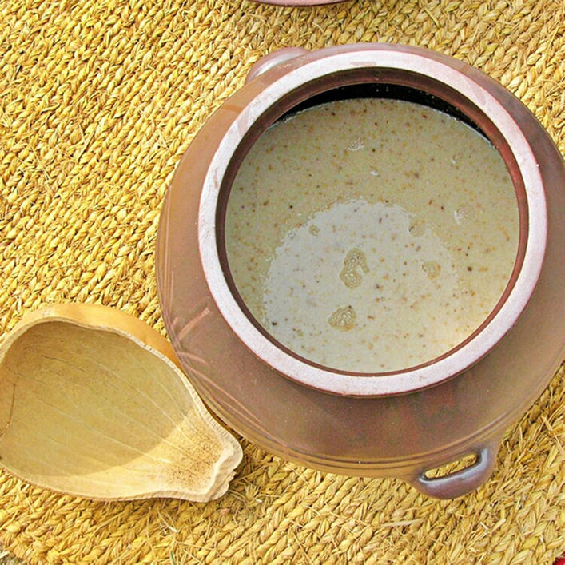
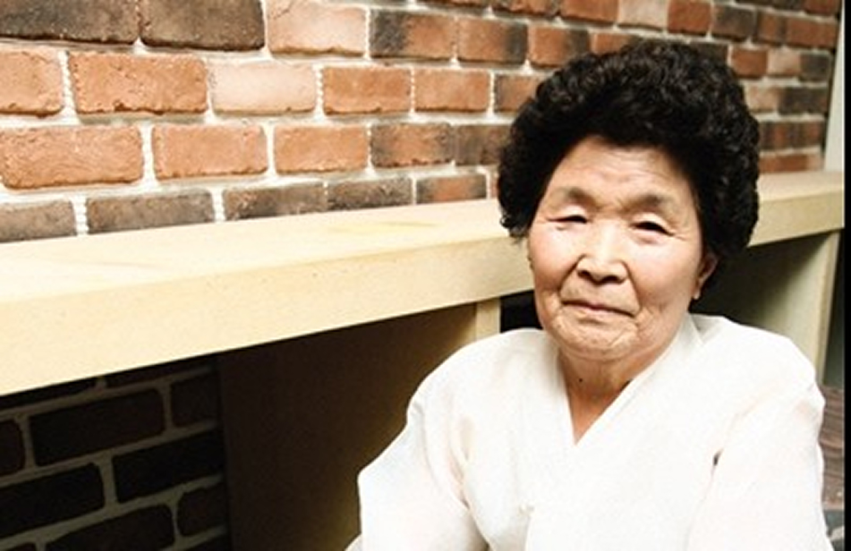

1500년역사 한산소곡주
덧술에 누룩을 쓰지 않는 이양주(二釀酒)이다. 고려시대부터 제조하였다. 조선시대에는 가장 많이 알려진 술이다. ＜농가월령가＞ 정월령에는 “며느리 잊지 말고 소국주
밑하여라.”라는 구절이 보이며, ≪동국세시기≫ 3월조에는 술집에서 소국주를 판다고 하였다.
소국주는 충청남도 서천군 한산의 것이 유명하다. 며느리가 술맛을 보느라고 젓가락으로 찍어먹다보면 저도 모르게 취하여 일어서지도 못하고 앉은뱅이처럼 엉금엉금 기어다닌다고 하여
‘앉은뱅이술’이라고도 한다.
만드는 법은 멥쌀로 무리떡을 쪄서 이 떡과 누룩가루를 묽게 섞어 아랫목에 사흘 동안 재우면 향긋한 냄새의 술밑이 된다.찹쌀로 다시 술밥을 찌고, 누룩은 밀가루처럼 곱게 친
녹갱이 누룩을 준비한다. 시루 맨 밑에 술밥을 깔고, 그 위에 녹갱이 누룩가루를 뿌린다. 그리고 그 위에 술밑을 깔아 마치 시루떡처럼 앉힌 뒤 100일 동안 땅 속에
묻어둔다. 100일이 지난 뒤 땅을 파고 열어보면 끈끈하고 샛노란 술이 젓가락 끝에 붙어 당긴다.


한산 소곡주 우희열 대표
무형문화재 우희열 명인한산소곡주 우희열 명인 이달의 농촌융복합산업인 선정! 한산소곡주 우희열 명인께서 4월의 농촌융복합산업인으로 선정되었습니다! 제조를 넘어 술빚기 체험 활동과 다양한 연령층에 사랑받을 수 있도록 소곡주 개발, 관광지와 연계한 체험 프로그램등 지역과 상생할 수 있는 방안을 마련하고.....